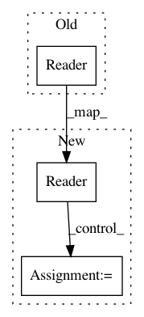

ba0de016423c1ef3370cf79a51aa7a5b8b6f03bb,petastorm/tests/test_ngram_end_to_end.py,NgramEndToEndDatasetToolkitTest,_test_continuous_ngram_tf,#NgramEndToEndDatasetToolkitTest#Any#,89
Before Change
ids = range(99)
dataset_dicts = create_test_dataset(tmp_url, ids, num_files=1)
ngram = NGram(fields=ngram_fields, delta_threshold=10, timestamp_field=TestSchema.id)
reader = Reader(
schema_fields=ngram,
dataset_url=tmp_url,
reader_pool=ThreadPool(1),
shuffle_options=ShuffleOptions(False))
readout_examples = tf_tensors(reader)
// Make sure we have static shape info for all fields
After Change
ngram = NGram(fields=ngram_fields, delta_threshold=10, timestamp_field=TestSchema.id)
with Reader(
schema_fields=ngram,
dataset_url=dataset_num_files_1.url,
reader_pool=ThreadPool(1),
shuffle_options=ShuffleOptions(False)) as reader:
readout_examples = tf_tensors(reader)
// Make sure we have static shape info for all fields
for timestep in readout_examples:
for field in readout_examples[timestep]:
assert field.get_shape().dims is not None
// Read a bunch of entries from the dataset and compare the data to reference
expected_id = 0
with tf.Session() as sess:
for _ in range(5):
actual = sess.run(readout_examples)
In pattern: SUPERPATTERN
Frequency: 3
Non-data size: 3
Instances
Project Name: uber/petastorm
Commit Name: ba0de016423c1ef3370cf79a51aa7a5b8b6f03bb
Time: 2018-08-22
Author: yevgeni@uber.com
File Name: petastorm/tests/test_ngram_end_to_end.py
Class Name: NgramEndToEndDatasetToolkitTest
Method Name: _test_continuous_ngram_tf
Project Name: google/deepvariant
Commit Name: 4b80fcf2751b42cc68b5e54d8156aa5148a74513
Time: 2019-09-13
Author: cym@google.com
File Name: third_party/nucleus/io/tfrecord.py
Class Name:
Method Name: read_tfrecords
Project Name: google/nucleus
Commit Name: 09a8f6dbe1ae360d7bfa1c9dd0d1a636e1bd86ea
Time: 2019-09-13
Author: cym@google.com
File Name: nucleus/io/tfrecord.py
Class Name:
Method Name: read_tfrecords